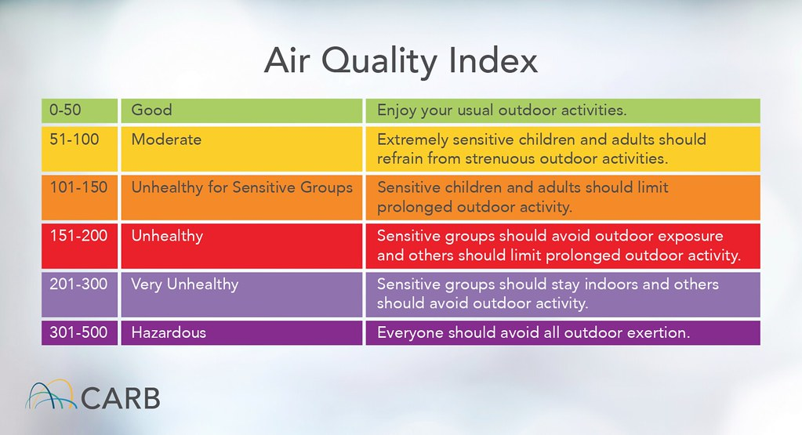

Machine Learning Project
At present, air pollution is thought to be one of the largest environmental health risks globally. It is estimated by the World Health Organization (WHO) that 6.7 million premature deaths occur annually as a result of exposure to ambient air pollution and household air pollution together [1]. These pollutants, specifically Particulate Matter (PM2.5 and PM10), Nitrogen Dioxide (NO2), and Ground-level Ozone, are tacit exacerbators of cardiovascular diseases, stroke, chronic obstructive pulmonary disease (COPD), and lung cancer. In lesser-developed cities, the situation can be highly variable in terms of air quality depending on geography, industrial development, and local traffic regulations. The Air Quality Index (AQI) serves as a standard measure for relaying these risks to the public; using this metric, complex chemical concentrations become reduced to a straightforward color-based scale stretching from “Good” to “Hazardous.”
But AQI can only begin to be fully understood through a reading of the daily forecast if you find not only typical weather and air-pollution patterns but their inverse. Some, such as wildfires, are infrequent and catastrophic; others, like vehicle emissions or industrial runoff, are chronic and cyclical. Studies have suggested that lower-income communities are often most affected by this high burden of pollution, since they are more likely to live in neighborhoods where relatively high levels of AQI are recorded as a regular course of their proximity to highways and factories. Using historical air quality, weather forecasts, and readings from the sensors themselves, you can track levels as well as forecast dangerous spikes in pollution before they happen. This work is intended to address these issues to see how individual pollutants contribute towards the AQI and in predicting future air quality trends.
